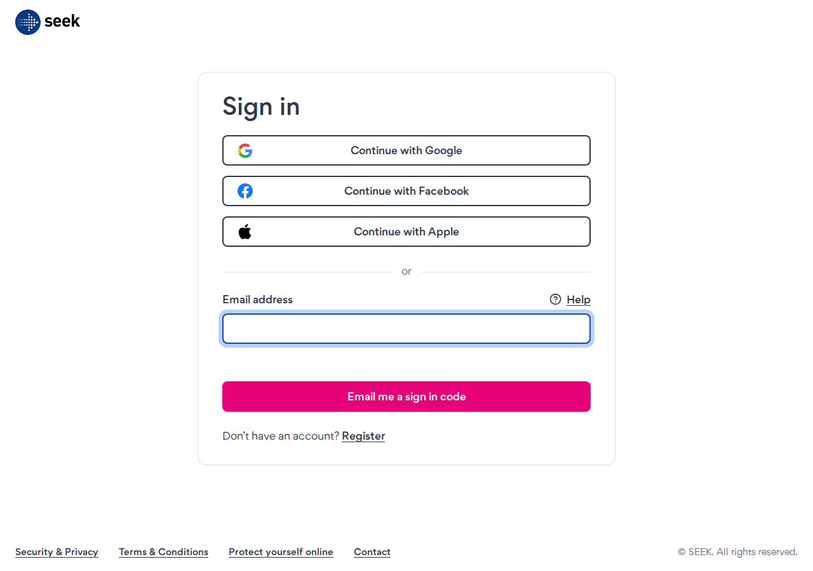

Multi-agent councils running 24/7. Automated job application bots. Cost-optimised model routing across DeepSeek, Claude, and local LLMs. All built from scratch, all shipping to production.
See what I've built →Not tutorials. Not coursework. These are live, autonomous systems running on cloud infrastructure.
A 7-agent autonomous council running 24/7 via WhatsApp on a cloud VPS. Routes requests to specialised sub-agents (Researcher, Coder, Writer, Analyst, Planner, Tennis Ops, Uni Work) with a Critic review layer. Integrates with an Obsidian vault that auto-syncs to GitHub.
Full browser automation using Playwright that scrapes Seek for matching jobs and submits applications — including resume upload, tailored cover letters, and multi-field form completion. Built to bypass Cloudflare bot detection while running on a local machine.
Intelligent model routing that slashes API costs by ~40x. Routine tasks go to DeepSeek V4 Flash ($0.07/M tok). Complex reasoning uses DeepSeek Reasoner or Claude Sonnet as a fallback. Swarm agents each get the model appropriate to their role, not a one-size-fits-all.
Researched and architected a self-hosted model pipeline using Ollama, Odysseus, and vLLM for fully offline, zero-cost inference. Capable of running small models on a Raspberry Pi for background tasks, with upgrade paths to GPU-powered local instances.
Every component is designed for autonomy, fault tolerance, and cost efficiency.
┌─────────────────────────────────────────────────────┐
│ WhatsApp │
│ (user sends a message) │
└──────────────────┬──────────────────────────────────┘
│
▼
┌─────────────────────────────────────────────────────┐
│ OpenClaw (Jarvis Intake) │
│ Classifies request → selects model → routes │
│ Model: Haiku (simple) / Sonnet (complex) │
└──────────────────┬──────────────────────────────────┘
│
▼
┌─────────────────────────────────────────────────────┐
│ Council Queen (Orchestrator) │
│ Writes task brief → delegates → collects output │
└──┬───────┬───────┬───────┬───────┬───────┬───────┬──┘
│ │ │ │ │ │ │
▼ ▼ ▼ ▼ ▼ ▼ ▼
┌─────┐ ┌─────┐ ┌─────┐ ┌─────┐ ┌─────┐ ┌─────┐ ┌─────┐
│Rsch │ │Coder│ │Writr│ │Anlys│ │Planr│ │Tnns │ │ Uni │
│ │ │ │ │ │ │ │ │ │ │Ops │ │Work │
└─────┘ └─────┘ └─────┘ └─────┘ └─────┘ └─────┘ └─────┘
│ │ │ │ │ │ │
└───────┴───────┴───────┼───────┴───────┴───────┘
│
▼
┌─────────────────────┐
│ Critic (Review) │
│ Sanity-checks │
│ all output │
└─────────────────────┘
│
▼
┌─────────────────────┐
│ Obsidian Vault │
│ → GitHub Auto-Sync │
└─────────────────────┘
│
▼
┌─────────────────────┐
│ WhatsApp Reply │
└─────────────────────┘

Most people use one model for everything. I route each task to the cheapest model that can handle it — saving ~40x on API costs while maintaining quality where it matters.
| Model | Cost per 1M input tokens | Best for | Cost vs Claude |
|---|---|---|---|
| DeepSeek V4 Flash | $0.07 | High-volume, routine tasks, heartbeats | ~43× cheaper |
| DeepSeek V4 Pro | $0.26 | Medium-complexity agent work | ~12× cheaper |
| DeepSeek Reasoner | $0.55 | Deep reasoning, analysis agents | ~5× cheaper |
| Claude Sonnet | $3.00 | Final synthesis, critical judgment | — |
| Ollama (Local) | $0.00 | Background agents, offline tasks | Free |
Fallback chain: DeepSeek → Claude. If DeepSeek is down, Claude takes over automatically. No gaps.
Instead of running all 6 agents on Claude (costing ~$3.00 each), a mixed swarm routes: 4 reviewers → DeepSeek Reasoner ($0.55), 1 researcher → DeepSeek Flash ($0.07), Final synthesis → Claude Sonnet ($3.00). Total: ~$5.27 vs $21.00 — same quality, 75% cheaper.
What I use to build these systems.
I'm available for remote AI development, automation consulting, and systems architecture work.